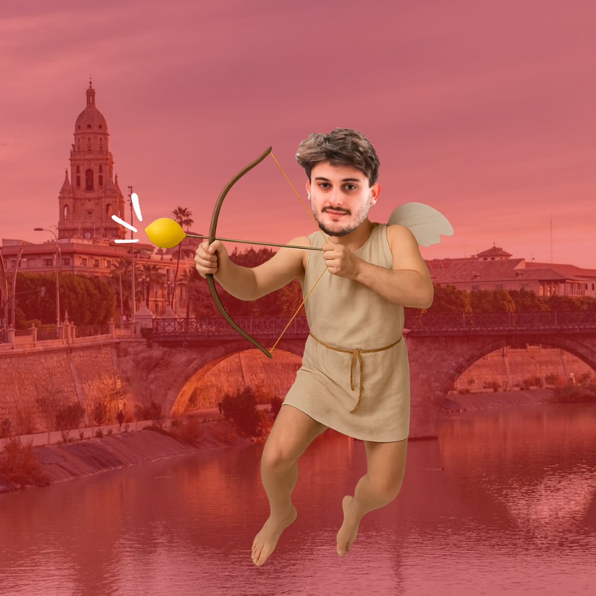

01
Amadeo
Gavilano
Ha adjudicado más aquí que en Madrid
Torneo de Debate BP • 2026
Hay pocas formas mejores de pasar San Valentín...
Clubs & Independientes
Clubs & Independientes
Ha adjudicado más aquí que en Madrid
Con ella no van a haber fallos en los ballots
Nos daba fomo ser el único torneo que no adjudique este año
Ha hecho cosillas en debate
Venid a Murcia. Calidad Ga-rantizada
Sabe distinguir entre Mojito y Caipirinha
Resultados y enfrentamientos en tiempo real vía Tabbycat.